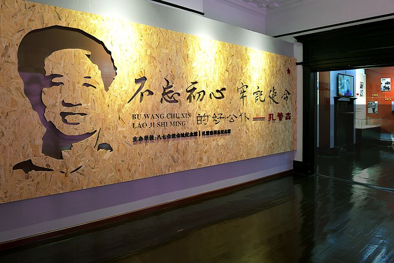
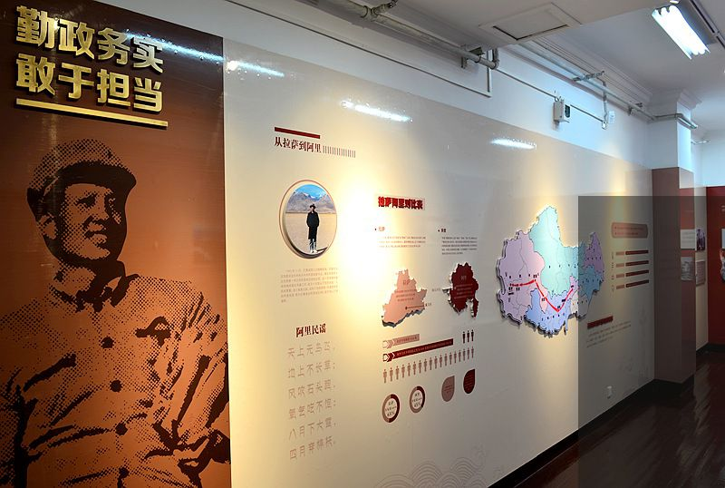
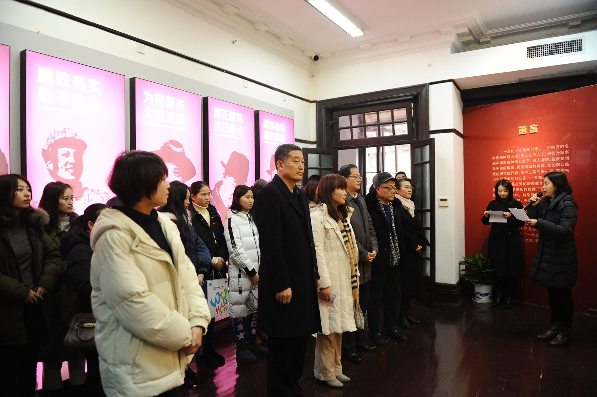

八七会议会址纪念馆依托八七会议旧址而建，是1920年英国人建造的一排 西式公寓(时称“怡和新房”)的一部分。1927年8月7日中共中央在此召开紧急会议，史称“八七会议”。 在中国 共产党成立以来中央召开的所有会议中，八七会议是惟一一次在历史转折的危机关头、在敌人的眼皮底下用短短 一天的时间，解决了挽救党、挽救革命的重要会议。会议坚决纠正了党内的右倾错误，确定土地革命和武装反抗 国民党反动派的总方针，实现了由大革命失败到土地革命兴起的历史性转变。毛泽东同志“枪杆子里出政权”的 著名论断即源于此。
1978年8月7日，纪念馆正式成立对外开放。1980年5月邓小平同志在北京 题写 “八七会议会址” 馆名，7月来馆指导会址复原工作。由于八七会议在中共党史中独特而重要的历史地位， 纪念馆先后被命名为全国重点文物保护单位、全国青少年教育基地、全国爱国主义教育示范基地、全国百家红色 旅游经典景区。2016年纪念馆入选全国20个“我最向往的党史纪念地”之一。2010年习近平同志也莅临我馆。
纪念馆现占地面积982.2平方米，总建筑面积3036平方米，设有触摸视频、 幻影成像、多媒体互动墙面等高科技展示手段，提升观众参观体验。纪念馆多年来坚持传承红色基因，弘扬革命 传统，不断创新社教活动，对广大党员干部开展不忘初心、牢记使命主题教育，对广大青少年学生开展革命传统教 育，同时创造性的推出了全国首部大学生主演的红色微电影《八七87》，在全国多个城市高校巡演获好评，该片 获得中国(武汉)微电影大赛“十佳城市形象宣传片”荣誉称号。
公交路线：
沿江大道兰陵路、
中山大道大智路（中山大道合作路口）、
胜利街车站路（单行线）、
鄱阳街兰陵路（单行线）
城市轨道交通：
轻轨1号线：大智路站下车，步行约1公里
地铁2号及6号线：江汉路下车，步行约1公里。
轮渡：武汉关轮渡码头下船，步行约1.5公里。
为深入学习贯彻党的十九大精神和习近平新时代中国特色社会主义思想，进一步落实“要把红色资源利用好、要把红色传统发扬好、要把红色基因传承好”精神，新年伊始，八七会议会址纪念馆和孔繁森同志纪念馆联合主办的《不忘初心牢记使命的好公仆——孔繁森》专题展制作完成，献礼新中国70岁生日。


1月3日上午，《不忘初心 牢记使命的好公仆——孔繁森》专题展开展仪式在八七会议会址纪念馆二楼临展展厅举行。武汉市文化局博物馆处副调研员程敏、孔繁森同志纪念馆副馆长李建国、八七会议会址纪念馆党支部书记张钢、副馆长王玲、武汉市体育发展投资有限公司党委书记董事长朱建斌、党委副书记总经理李秋萍出席开展仪式，武汉市体育发展投资有限公司党员干部等观众80余人参加了此次活动。

专题展展出了百余张照片和珍贵的手稿，通过大量翔实的图文资料从“对党忠诚 信念坚定”、“勤政务实 敢于担当”、“为民服务 大爱无疆”、“清正廉洁 克己奉公”、“星陨边陲 魂归故里”五个部分回顾了领导干部的楷模、民族团结的典范、党的群众路线的模范践行者、“三严三实”的好干部、“不忘初心 牢记使命”的好公仆——孔繁森同志的光辉事迹。担任此次开展讲解的是孔繁森同志纪念馆讲解员刘琳，她饱含深情，向嘉宾和观众们娓娓道来了孔繁森同志的光辉事迹，讲到孔繁森同志留下的遗书时，感人至深、催人泪下。
《不忘初心牢记使命的好公仆——孔繁森》专题展将一直持续到今年7月，免费对全社会开放，欢迎广大观众和社会团体前来八七会议会址纪念馆参观。